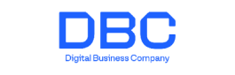
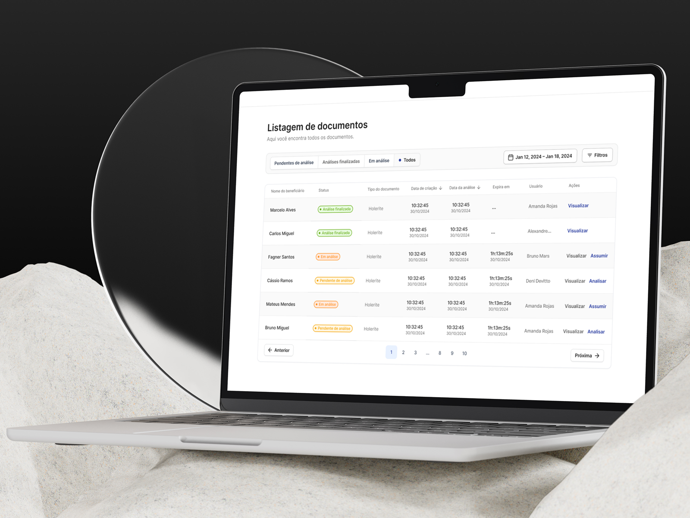
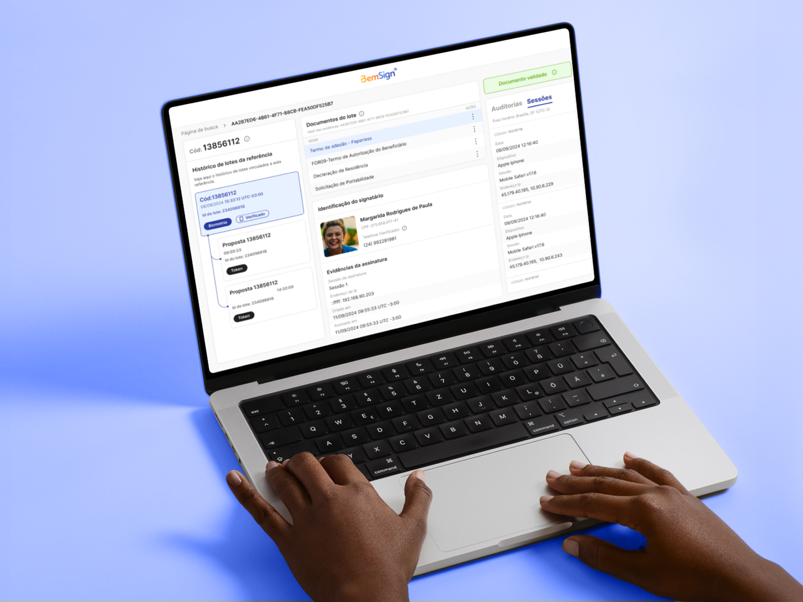

Agência
• Craftando experiências
Buscando sempre entender o problema para testar hipóteses que vão gerar a melhor solução. O craft de uma solução nunca é linear, por isso o estudo contínuo é necessário.
Vamos conversar
• Empresas que já trabalhei
Startup

Consultoria
Startup
• Trabalhos
Veja alguns dos meus últimos trabalhos
Portal de análise de documentos de renda com AI
Ferramenta de backoffice para análise documental com apoio de IA, criada para reduzir trabalho manual, custo e tempo de SLA em um fluxo de crédito sensível.
Ver case
BemSign - Portal Validador
Portal de validação de documentos e revisão operacional com foco em clareza de status, redução de retrabalho e fluxo mais objetivo.
Ver case
• Experiência
Minha trajetória em produto,
Minha trajetória em produto,
UX e design
Experiências que conectam pesquisa, interface, estratégia e contexto real de uso para construir produtos mais claros, funcionais e relevantes.
Acehub
Ux/Ui designer sênior
Set 2025 - O momento
Ver mais
Acehub
Ux/Ui designer sêniorResponsável pela experiência do ecossistema do Acehub, ainda em construção, do diagnóstico de problemas à entrega em produção. Trabalho próximo aos stakeholders, participando das decisões que acontecem antes do design.
Vulpi Studio
Product designer independent
Jan 2025 - Set 2025
Ver mais
Vulpi Studio
Product designer independentResponsável por descobrir novos produtos, mapear jornadas, melhorar a experiência de produtos SaaS, ERP, aplicativos e sites.
Dbc Company
Ux/Ui designer sênior
Jan 2024 - Dez 2024
Ver mais
Dbc Company
Ux/Ui designer sêniorAtuei no desenvolvimento de produtos digitais voltados para contextos administrativos e operacionais, incluindo um portal de análise de documentos com uso de inteligência artificial, uma plataforma de assinaturas eletrônicas com foco em acessibilidade para idosos, e ferramentas internas para gestão de processos e criação de lotes documentais.
Ao longo do período, conduzi pesquisas qualitativas e quantitativas, sessões de shadowing com usuários finais, além de dinâmicas colaborativas com stakeholders, tanto em etapas de discovery quanto em ciclos mais curtos.
- Redução de até 40% no SLA de análise em alguns fluxos operacionais;
- Queda significativa nos custos operacionais em determinados produtos;
- Melhoria perceptível na satisfação dos usuários e clareza na jornada dos operadores;
- Reestruturação de telas e lógicas que aumentaram a eficiência dos peritos na análise documental, antes limitada por informações dispersas e processos confusos.
Minha atuação envolveu desde a imersão no contexto até a prototipação e validação de soluções, sempre com foco na simplificação de jornadas, clareza das informações e redução de esforço cognitivo para os diferentes perfis de usuário.
Guia Moto
Ux/Ui designer sênior - Freelance
Mai 2023 - Dez 2023
Ver mais
Guia Moto
Ux/Ui designer sênior - FreelanceAtuei no desenvolvimento do MVP de um aplicativo voltado para motociclistas interessados em explorar roteiros de viagem, seja em grupo ou de forma individual. O app oferecia sugestões de trajetos baseadas na localização do condutor, destacando pontos de interesse como parques, restaurantes e atrações turísticas, além de incluir uma comunidade integrada para que os usuários compartilhassem experiências e interagissem com outros viajantes.
- Mapeamento e melhoria das jornadas de uso, considerando diferentes perfis de motociclistas;
- Condução de pesquisas com usuários e testes de usabilidade para validar hipóteses de valor;
- Participação ativa em brainstorms estratégicos com foco em monetização, engajamento e redução de custos operacionais;
- Criação de fluxos e wireframes otimizados para mobile-first, com foco em escalabilidade e clareza desde as primeiras interações.
Esse projeto teve como foco principal a entrega de um MVP funcional, com base em decisões sustentadas por dados qualitativos e alinhamento contínuo com o time de stakeholders.
Gh Brantech
Ux/Ui designer pleno
Jan 2021 - Mai 2023
Ver mais
Gh Brantech
Ux/Ui designer plenoParticipei do desenvolvimento da Plataforma Edusfera, uma solução educacional da Santillana voltada para o Ensino Médio, que visa oferecer uma experiência de aprendizagem dinâmica, personalizada e alinhada às diretrizes do novo currículo nacional. A plataforma integra conteúdos multimodais, itinerários formativos e recursos interativos, adaptando-se às necessidades de escolas, professores e estudantes.
- Mapeamento de jornadas de usuários, considerando os diferentes perfis de estudantes e educadores;
- Condução de pesquisas qualitativas e quantitativas para identificar necessidades e oportunidades de melhoria;
- Desenvolvimento de wireframes e protótipos interativos, com foco em usabilidade e acessibilidade;
- Colaboração com equipes multidisciplinares para garantir a coerência entre os objetivos pedagógicos e as soluções tecnológicas implementadas;
- Participação em sessões de brainstorming e workshops com stakeholders para alinhar estratégias e metas do projeto.
Este projeto me proporcionou uma compreensão mais profunda dos desafios e oportunidades no setor educacional, além de reforçar a importância de soluções centradas no usuário para promover uma aprendizagem eficaz e significativa.
• Contato
Aberto para novos projetos e conversas relevantes.
ofelipevedova@gmail.comPara produtos, plataformas, sites ou experiências digitais com mais intenção.